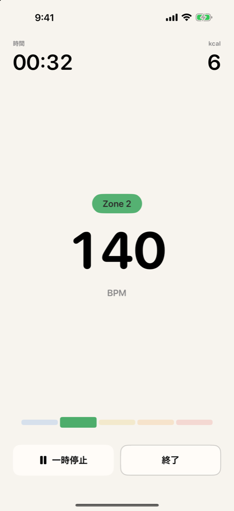
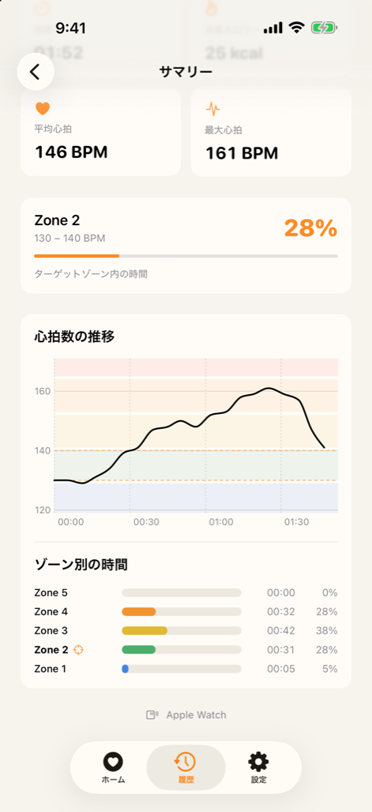

ZoneCoach
心拍ゾーンを音声でお知らせ。画面を見ずに「いちばん脂肪が燃えるペース」をキープできる、ランニング用の心拍コーチアプリです。
- 音声で脂肪燃焼ペースをキープ: 心拍数から5段階のゾーンを自動で判定し、ゾーンが変わるとイヤホンに音声でお知らせ。画面を見ずに走れます。
- Apple Watch・BLE心拍計に対応: Apple Watchのほか、Polar・Wahoo・GarminなどBLE標準の心拍計から心拍数を読み取ります。Watchでもゾーンの色と振動でお知らせ。
- 心拍グラフで振り返り: ワークアウト後に心拍の推移グラフとゾーン別の時間を表示。記録はAppleの「ヘルスケア」にも保存されます。
- ロック画面・Dynamic Island: 走っている間の心拍とゾーンをロック画面とDynamic Islandに表示（プレミアム機能）。

